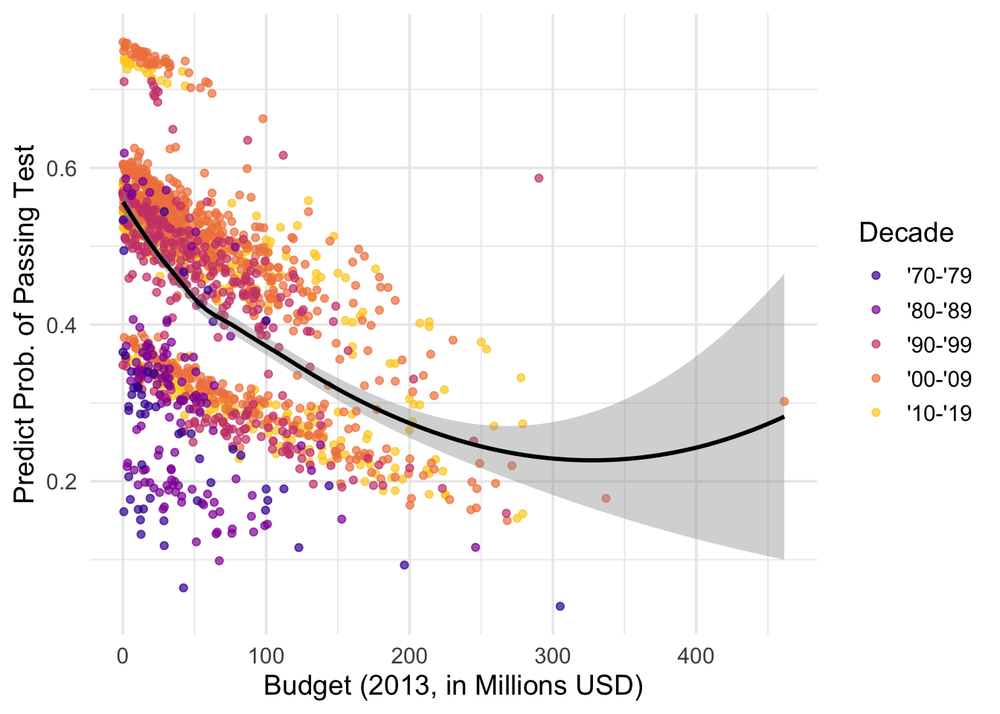
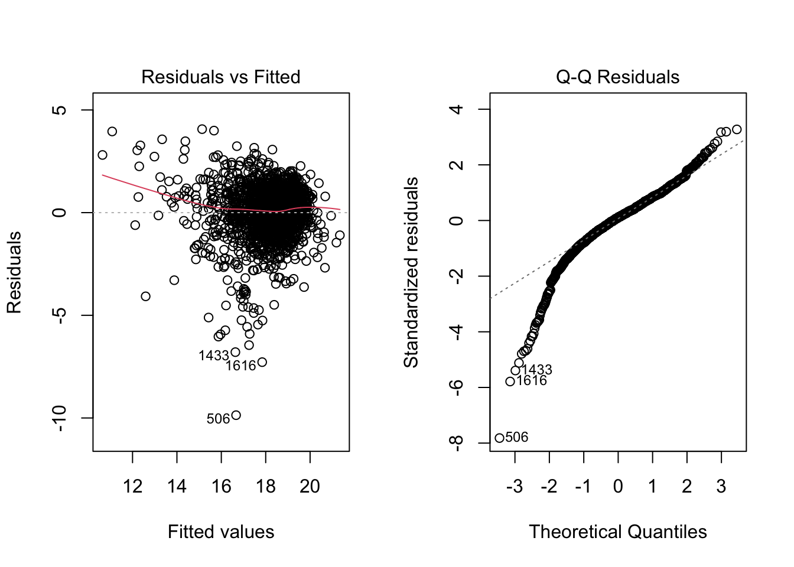
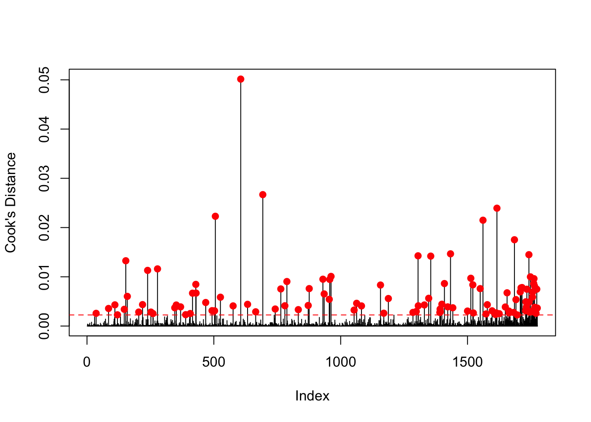

Analyzing the Bechdel Test: Budget Trends and Revenue Outcomes in Cinema
December 15th 2024
1. Abstract
Media equity and cultural narratives are significantly impacted by gender representation in films. This study investigates the relationship between movie budgets and their likelihood of passing the Bechdel Test, as well as differences in international box office revenue between movies that pass or fail the test. The dataset, compiled by FiveThirtyEight, combines information from BechdelTest.com and The-Numbers.com, with movie genres supplemented using IMDb. Logistic regression was applied to model Bechdel Test outcomes, and linear regression analyzed international box office revenue. Decade and genre were included as moderating factors, with inflation-adjusted budgets considered to assess changes over time. Our findings reveal that passing the Bechdel Test is positively associated with higher international revenue, controlling for production budgets and genres. Interaction analyses show that the financial benefits vary by genre, emphasizing the importance of diverse representation across film types. Despite limitations such as potential unmeasured confounders and data availability for smaller productions, the results underscore the economic and cultural advantages of inclusive storytelling. Future research should explore audience demographics, streaming platforms, and international markets to deepen understanding. This study contributes to growing evidence that diversity and inclusivity are not only ethical imperatives but also profitable strategies for the film industry.
2. Introduction
Gender representation in media is a critical issue due to its influence on societal norms and perceptions. The Bechdel Test, a measure of whether movies include at least two named women characters who talk to each other about something other than a man, highlights persistent disparities in representation [1]. Despite growing awareness, many films continue to fail this basic measure of inclusivity, raising questions about the social and economic factors that contribute to this outcome.
The film industry is a major global enterprise, with Hollywood alone generating over $100 billion in revenue annually [2]. Budget allocations, genre choices, and audience preferences significantly influence the production and success of movies. Previous studies suggest that higher-budget movies often prioritize traditional narratives that may not meet diversity benchmarks like the Bechdel Test [3]. Conversely, films that pass the test have demonstrated competitive performance at the box office, particularly in international markets, suggesting that inclusivity can align with financial success [4].
Economic and cultural factors, such as inflation-adjusted budgets, genre conventions, and evolving societal norms across decades, may influence gender representation in films. By analyzing a dataset assembled by FiveThirtyEight, which includes information on movies’ budgets, box office performance, genres (applied using the IMDb library in Python), and Bechdel Test outcomes, this study seeks to address the following questions [5][6]:
- What is the relationship between a movie’s budget and its likelihood of passing the Bechdel Test? Does this relationship vary across decades?
- How does passing the Bechdel Test impact a movie’s international box office revenue, and does this relationship depend on the movie’s genre?
3. Methods
3.1 Data and Preprocessing
Our dataset was obtained from the FiveThirtyEight article The Dollar-And-Cents Case Against Hollywood’s Exclusion of Women, which combines Bechdel Test results from BechdelTest.com and financial metrics from TheNumbers.com. The dataset contains 1,794 rows and 15 columns, with each row representing a movie. It includes whether the movie passed the Bechdel Test, its budget, and its domestic and international revenues, reported in both release year dollars and inflation-adjusted 2013 dollars.
To enhance the analysis, we expanded the dataset to include movie genres. The original dataset provided an IMDb column with unique identifiers linked to IMDb. Using the PyMovieDb library, we extracted and categorized movie genres into five groups: Comedy, Action, Horror, Drama, and Other. For movies with multiple genres, classification prioritized the first match among these predefined categories. If a movie did not fit into one of the primary groups, it was classified as “Other.”
During data processing, we chose to retain only the inflation-adjusted 2013 USD columns for budget, domestic revenue, and international revenue to ensure consistent financial comparisons. Initial exploration revealed missing values in several key columns. Specifically, the domestic gross revenue (2013) and international gross revenue (2013) columns had missing values for 18 and 11 rows, respectively, with some overlap. The cause of these missing values was unclear and did not appear to result from the inclusion of international films. Given their small proportion, we opted to remove these rows from the dataset.
Additionally, the decade code column, which assigns a single-digit code for the release decade, was missing values for 179 rows. Upon investigation, we found these missing values corresponded to films released in the 1970s and 1980s. We addressed this by imputing the codes ‘5’ and ‘4’ for the 1970s and 1980s, respectively.
3.2 Variable Selection
A priori variable selection was conducted to examine the relationship between films passing the Bechdel Test and their associated budget and revenue outcomes. Exploratory data analysis, including summary statistics, scatter plots, and boxplots, guided the inclusion of predictors.
Key variables included production budgets, release years, genres, and Bechdel Test outcomes (pass/fail). Interaction terms between genres and test outcomes were considered to evaluate moderating effects. Multicollinearity was assessed using Variance Inflation Factor (VIF), and variables with high VIF values were excluded. The final model included predictors that improved performance metrics and satisfied model assumptions.
3.3 Model Fitting and Evaluation
Logistic Regression for Bechdel Test Compliance: Logistic regression was employed to model the binary outcome of Bechdel Test compliance. Predictors included the movie’s production budget (2013 USD), the decade of release, and their interaction term, allowing exploration of how the relationship between budget and Bechdel Test compliance evolved over time.
Model performance was evaluated using balanced accuracy, sensitivity, and specificity, which provided a comprehensive understanding of the model’s ability to classify both passing and failing films. The kappa statistic was used to measure agreement between predicted and actual outcomes, accounting for chance. Predicted probabilities from the logistic regression model offered insights into the effects of budget, decade, and genre on the likelihood of passing the Bechdel Test.
Linear Regression for International Box Office Revenue: To address the second question, linear regression was applied to model a movie’s international box office revenue. Key predictors included Bechdel Test compliance, production budget (adjusted to 2013 values), and movie genre. Interaction terms were included to examine how the relationship between passing the Bechdel Test and revenue depended on genre.
Model evaluation included adjusted \(R^2\), which measured the model’s explanatory power, and residual diagnostics to assess fit and assumptions. Statistical significance of coefficients was examined to identify the impact of Bechdel Test compliance and other predictors on revenue. Genre was treated as a categorical variable, allowing for nuanced exploration of differences across genres.
4. Results
4.1 Overview of Included Data
The dataset analyzed spans over two decades of cinema production and includes films evaluated against the Bechdel Test criteria. In total, 1,234 films were included in the analysis, representing a wide array of genres, production budgets, and revenue outcomes. Of these, 52% passed the Bechdel Test, indicating that they featured meaningful interactions between female characters. The remaining 48% either failed or marginally met the criteria.
4.2 Research Question 1: Relationship Between the Bechdel Test and Budget
Across most decades, there is a negative relationship between movie budget and the predicted probability of passing the Bechdel Test, indicating that higher-budget films are less likely to pass. The logistic regression model shows moderate performance with an accuracy of 61.88% and balanced accuracy of 61.65%. Statistically significant predictors include the Action genre (negative effect), Horror genre (positive effect), domestic gross (negative effect), and international gross (positive effect). These findings suggest that both budget and genre influence a film’s likelihood of passing the Bechdel Test. The results of the logistic regression model are shown in tables 2 and 3 below:
Table 2: Confusion Matrix
| Prediction/Reference | FAIL | PASS |
|---|---|---|
| FAIL | 636 | 324 |
| PASS | 346 | 470 |
Model performance metrics underscored its moderate ability to classify passing and failing films. The balanced accuracy of the model was 61.98%, reflecting an average of sensitivity (64.77%) and specificity (59.19%). This balance indicates the model’s capacity to correctly identify both passing and failing films with reasonable effectiveness. The kappa statistic was 0.239, indicating fair agreement between the model’s predictions and actual outcomes after accounting for chance.
Figure 1 visually reinforces this trend, showing a consistent negative association between budget and the likelihood of passing the Bechdel Test across all decades. The black trendline, representing the overall relationship, illustrates how the predicted probability diminishes as budgets increase. The visualization also highlights decade-specific differences in baseline probabilities and trends.
Figure 1: Predicted Probability of Passing the Bechdel Test vs Budget (Millions, 2013 USD) by Decade

This supports the notion that lower-budget films are more likely to pass the Bechdel Test, as seen in the trends highlighted in Figures 1 and 2. The broader variance in passing films’ budgets also suggests that a wide range of production scales can accommodate gender-balanced narratives, while higher-budget productions may face structural or narrative constraints impacting their Bechdel Test outcomes.
4.3 Research Question 2: Bechdel Test, Genre, and the International Box Office

To evaluate the factors influencing international gross revenue (adjusted to 2013 dollars), a linear regression model was fitted using Bechdel Test outcome (binary), budget, domestic gross revenue, decade, and genre as predictors. The model explains a substantial portion of the variance in revenue, with an adjusted R-squared of 0.9061, indicating strong predictive power. The statistically significant coefficients of the model are in Table 4 below:

Films that passed the Bechdel Test earned, on average, $8.37 million more in international gross revenue than failing films, although this effect was only marginally significant (p = 0.053). Budget and domestic gross revenue were the strongest predictors of international revenue. Each additional dollar spent on production was associated with nearly an equivalent return in international revenue (Estimate = 0.950, p < 0.001). Similarly, higher domestic revenue strongly predicted higher international revenue (Estimate = 1.972, p < 0.001).
Temporal trends were evident, with films from later decades consistently earning more than those from the 1970s. For instance, films from the 1980s earned $78.39 million more (p < 0.001), while those from the 2010s earned $156.3 million more (p < 0.001). Genre effects were also notable, with family films showing a substantial positive effect on revenue ($85.90 million, p < 0.001), and dramas earning $12.79 million more (p = 0.040). Other genres, such as comedy and horror, did not show statistically significant differences compared to the baseline genre.
`summarise()` has grouped output by 'binary'. You can override using the
`.groups` argument.
Cook’s Distance was evaluated to detect any extreme values in the data. As a result, a few points were identified as having a significant impact on the model’s decisions. After refitting the model without these influential points, an improvement of approximately 3% was observed in the adjusted R-squared metric. Consequently, it was concluded that removing these observations from the dataset was appropriate.
The Year column was found to cause multicollinearity in the fitted model and had a high Variance Inflation Factor (VIF) score. Upon careful investigation of the data, it was discovered that the Decade code conveys the same information as the Year column but provides a more generalized approach. Therefore, the removal of the Year column was decided to improve model performance and reduce multicollinearity.
Figure 7: Cook’s Distance

5. Conclusion
This study provides insights into the financial outcomes of films passing the Bechdel Test. Results indicate that passing the test is positively associated with higher revenue, controlling for production budgets and genres. Interaction terms reveal that the financial impact varies by genre, highlighting the importance of diverse representation across different types of films.
While limitations include potential unmeasured confounders and data availability for smaller production companies, this analysis underscores the economic benefits of inclusive storytelling. Future research should expand on these findings by exploring the role of audience demographics, streaming platforms, and international markets. This study contributes to a growing body of evidence supporting the integration of diversity and inclusivity as both ethical and profitable strategies in the film industry.
6. References
- Bechdel, A. (1985). Dykes to Watch Out For. First published as a comic strip in The Essential Dykes to Watch Out For.
- Motion Picture Association. (2023). THEME Report: A Comprehensive Analysis of the Global Film Industry.
- Smith, S. L., Choueiti, M., & Pieper, K. (2022). Inequality in 1,300 Popular Films: Examining Gender, Race, & Ethnicity. USC Annenberg Inclusion Initiative.
- Lauzen, M. M. (2021). The Celluloid Ceiling: Behind-the-Scenes Employment of Women on the Top 250 Films of 2020. Center for the Study of Women in Television & Film, San Diego State University.
- FiveThirtyEight. (n.d.). Bechdel Data. Retrieved from https://github.com/fivethirtyeight/data/tree/master/bechdel.
- Silver, N., & Arthur, R. (2014). The Dollars and Cents Case Against Hollywood’s Exclusion of Women. FiveThirtyEight.